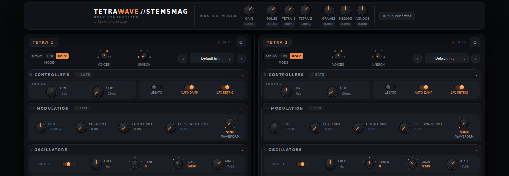
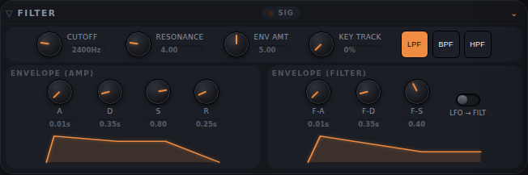
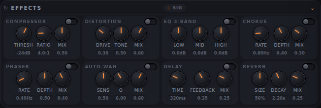
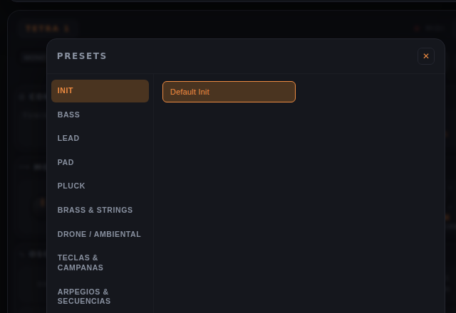
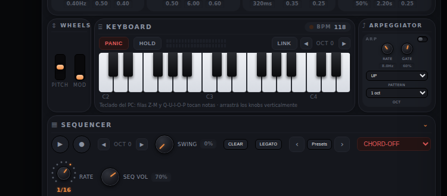
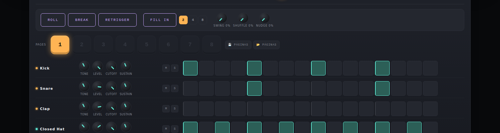
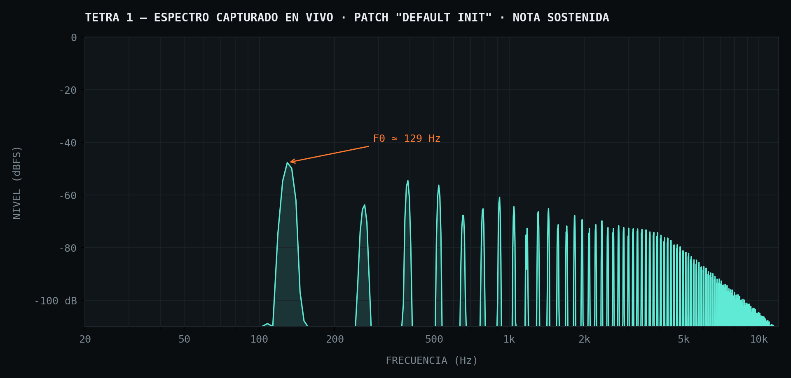
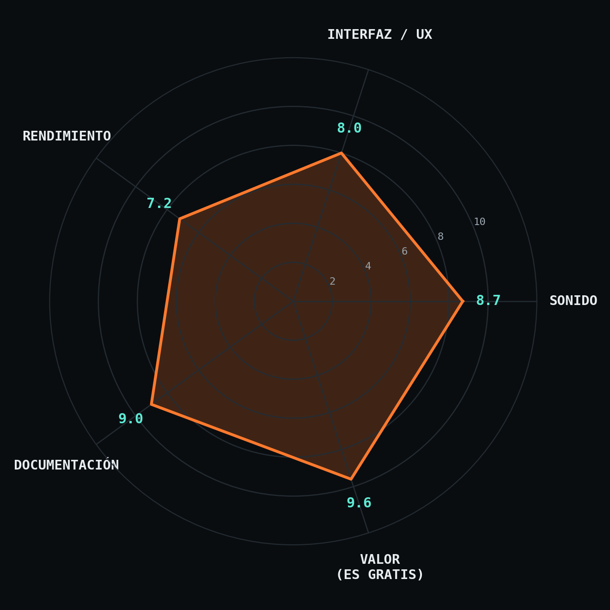

Le conectamos un analizador de espectro real al motor de audio, medimos su respuesta y pasamos una semana entera dentro de sus perillas. Esto es lo que encontramos.

Un sintetizador que corre en una pestaña del navegador suele venir con una advertencia implícita: va a sonar a demo. TetraWave, el instrumento gratuito de StemsMag, se pasó esa advertencia por alto. En vez de un solo motor liviano, trae dos sintetizadores poly-paraphonic completos e independientes —TETRA 1 y TETRA 2— más una caja de ritmos sin una sola muestra grabada, PULSE-9, todo generado en tiempo real con la Web Audio API nativa. Para comprobar si el sonido está a la altura del discurso, no nos quedamos escuchando: le conectamos un AnalyserNode al bus maestro y capturamos el espectro real mientras sonaba una nota. Los resultados están más abajo.
Nada de lo que suena en TETRA 1 o TETRA 2 sale de un sample. Cada voz arma su propia cadena de nodos de audio en tiempo real: hasta tres osciladores más una fuente de ruido, un filtro biquad conmutable entre paso bajo, alto y banda con resonancia y seguimiento de teclado, envolventes ADSR de amplitud y ADS de filtro con gráfico en pantalla, un LFO compartido, y una cadena de efectos completa antes del mixer maestro. Como no hay ningún sample de por medio, cualquier cambio se escucha al instante, incluso a mitad de una nota sostenida.


Duplicar el sintetizador en vez de ofrecer un solo motor "más grande" resulta más útil de lo que parece en el papel. Tener dos instancias completas —cada una con sus tres modos de polifonía (poly, mono, unísono con detune), su arpegiador con patrones up/down/up-down, y su propio secuenciador de 16 pasos por página con acordes y swing— permite lo que en un DAW normal exigiría abrir dos pistas: un bajo en Tetra 1 y un pad sostenido en Tetra 2, editables por separado pero siempre en fase. Cada motor trae, además, más de 1.700 presets de fábrica organizados por categoría.

Bass, Lead, Pad, Pluck, Brass & Strings, Drone/Ambiental, Teclas & Campanas, Arpegios & Secuencias, FX & Experimental — suficientes para empezar a tocar sin programar nada, y con el tiempo, para entender por comparación cómo está armado cada patch.

Si los dos Tetra son el corazón melódico, Pulse-9 es la parte que más sorprende, precisamente porque no debería sonar tan bien sin usar una sola muestra grabada. Sus ocho voces de percusión —kick, snare, clap, hi-hats, low tom, shaker y un wood clack tipo clave— están sintetizadas por código: el kick con envolvente de pitch, la caja combinando cuerpo tonal con ruido, los hi-hats como bancos de osciladores metálicos filtrados en agudos. Encima de esa base hay cuatro controles de performance para tocar en vivo:
| Control | Función |
|---|---|
| Roll | Mantenido, hace stutter de todo el patrón a 4× velocidad |
| Break | Mantenido, silencia kick/snare/clap/tom y deja solo percusión suelta |
| Retrigger | Mantenido, repite el paso actual acelerando (build-up) |
| Fill In | Al soltar, inserta un relleno generado y vuelve sola al patrón |

Esto es lo que nadie suele mostrar en una reseña de un instrumento virtual: qué está sonando de verdad. En vez de describir el timbre con adjetivos, inyectamos un AnalyserNode en el bus maestro de Tetra 1, sostuvimos una nota con el patch de fábrica "Default Init" (dos osciladores en diente de sierra más uno triangular) y capturamos la respuesta en frecuencia directamente del motor mientras sonaba.

La serie de armónicos regularmente espaciados —y decayendo de forma progresiva hacia los agudos— es exactamente lo que se espera de una mezcla de ondas diente de sierra: un contenido armónico rico, sin aliasing audible ni artefactos digitales extraños en el rango medible. El pico fundamental cae en torno a 129 Hz, consistente con la nota tocada. Para un motor que corre íntegramente en JavaScript dentro del navegador, es una señal limpia.
| Módulo | Detalle |
|---|---|
| Motor de audio | Web Audio API nativa, sin samples en los sintetizadores |
| Osciladores | 3 osc + ruido por voz, waveforms clásicas, unísono con detune, PWM real |
| Filtro | Lowpass / Highpass / Bandpass, resonancia 0.1–20, seguimiento de teclado |
| Envolventes | Amp (A/D/S/R) y Filtro (A/D/S), con gráfico ADSR en vivo |
| Modulación | LFO compartido → pitch / filtro / PWM |
| Efectos | Chorus, Phaser, Distorsión, Auto-Wah, Delay, Reverb por convolución |
| Polifonía | Poly / Mono / Unísono, con portamento y legato |
| Secuenciador | 16 pasos × 8 páginas, TIE, acordes, swing, +40 presets de patrón |
| Presets de sonido | +1.700 patches de fábrica por Tetra, organizados por categoría |
| Pulse-9 | 8 voces de percusión sintetizada, sin muestras |
| Transporte | Pulse-9 es maestro; sincroniza los 3 motores sobre un mismo reloj |
| Guardado | Exportación de páginas a .json — nada se guarda en servidor |
| Exportación de audio | No disponible (sin render a WAV/MP3 por ahora) |

El rendimiento es la categoría más floja, y depende directamente del equipo: en hardware modesto, patrones densos con muchos efectos activos pueden generar cortes. El resto sostiene el conjunto — sobre todo la relación con el precio, que es cero.
TetraWave no compite con un DAW ni lo pretende: compite con la pregunta de qué tan lejos puede llegar un instrumento construido enteramente con Web Audio API, sin backend ni costo. Llega bastante lejos. El espectro que medimos confirma una síntesis limpia, y el catálogo de presets, arpegiador y secuenciador por motor sostienen horas de uso antes de tocar techo. La ausencia de exportación de audio es la limitación real frente a herramientas de estudio — el resto son detalles menores frente a lo que ofrece gratis.